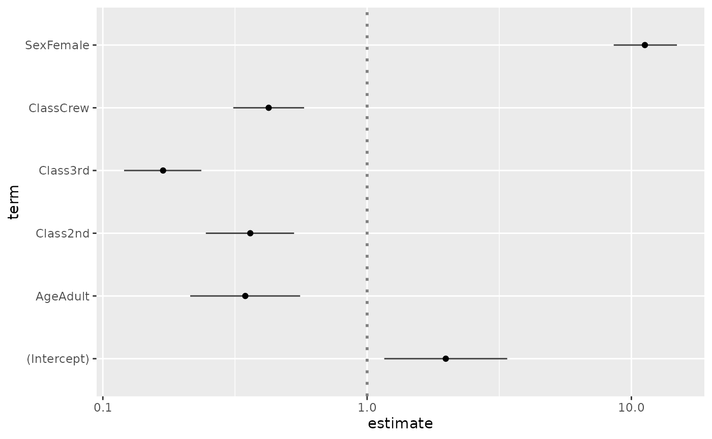
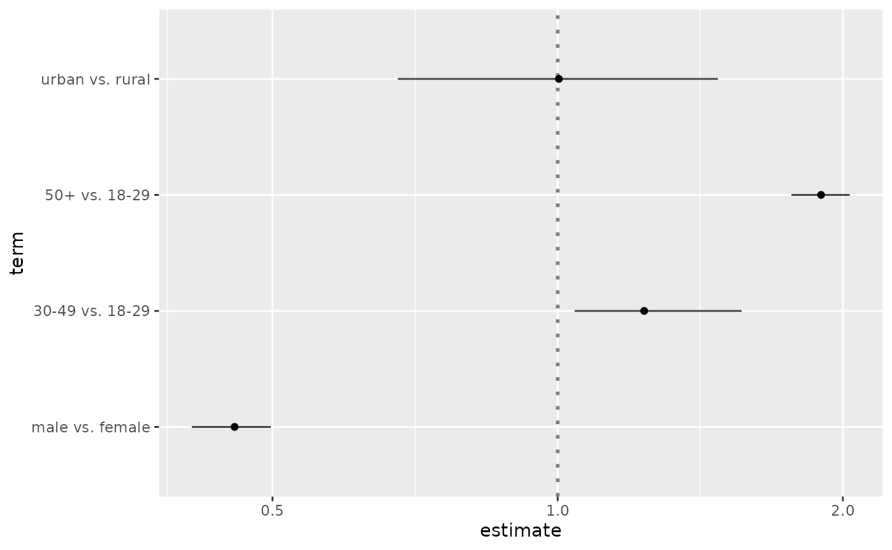
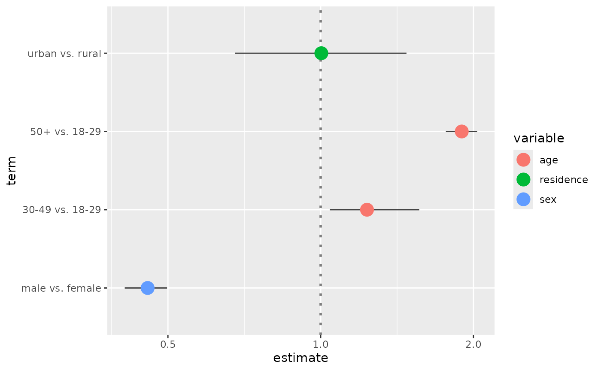

library(GGally) #> Loading required package: ggplot2 #> Registered S3 method overwritten by 'GGally': #> method from #> +.gg ggplot2
GGally::ggcoef()
The purpose of this function is to quickly plot the coefficients of a model.
Quick coefficients plot
To work automatically, this function requires the broom package. Simply call ggcoef() with a model object. It could be the result of stats::lm, stats::glm or any other model covered by broom and its broom::tidy method1.

In the case of a logistic regression (or any other model for which coefficients are usually exponentiated), simply indicated exponentiate = TRUE. Note that a logarithmic scale will be used for the x-axis.
d <- as.data.frame(Titanic) log.reg <- glm(Survived ~ Sex + Age + Class, family = binomial, data = d, weights = d$Freq) ggcoef(log.reg, exponentiate = TRUE)

Customizing the plot
You can use conf.int, vline and exclude_intercept to display or not confidence intervals as error bars, a vertical line for x = 0 (or x = 1 if coefficients are exponentiated) and the intercept.
ggcoef(reg, vline = FALSE, conf.int = FALSE, exclude_intercept = TRUE)
See the help page of ggcoef() for the full list of arguments that could be used to personalize how error bars and the vertical line are plotted.
ggcoef( log.reg, exponentiate = TRUE, vline_color = "red", vline_linetype = "solid", errorbar_color = "blue", errorbar_height = .25 )

Additional parameters will be passed to [ggplot2::geom_point()].
ggcoef(log.reg, exponentiate = TRUE, color = "purple", size = 5, shape = 18)

Finally, you can also customize the aesthetic mapping of the points.
library(ggplot2) ggcoef(log.reg, exponentiate = TRUE, mapping = aes(x = estimate, y = term, size = p.value)) + scale_size_continuous(trans = "reverse")

Custom data frame
You can also pass a custom data frame to [ggcoef()]. The following variables are expected:
-
term(except if you customize the mapping) -
estimate(except if you customize the mapping) -
conf.lowandconf.high(only if you want to display error bars)
cust <- data.frame( term = c("male vs. female", "30-49 vs. 18-29", "50+ vs. 18-29", "urban vs. rural"), estimate = c(.456, 1.234, 1.897, 1.003), conf.low = c(.411, 1.042, 1.765, 0.678), conf.high = c(.498, 1.564, 2.034, 1.476), variable = c("sex", "age", "age", "residence") ) cust$term <- factor(cust$term, cust$term) ggcoef(cust, exponentiate = TRUE)

ggcoef( cust, exponentiate = TRUE, mapping = aes(x = estimate, y = term, colour = variable), size = 5 )
